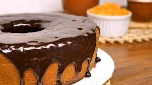

Tal qual conhecemos hoje, o bolo de cenoura é brasileiro por excelência e tem historia recente. O bolo de cenoura é um bolo doce com raspagem de cenoura misturada dentro da massa. A cenoura é amolecida no processo do cozimento, e o bolo, usualmente, tem um amolecimento e uma textura densa e suave. A origem desta receita é incerta, mas certamente é uma das receitas mais populares em todo o Brasil!
Ingredientes da massa
1/2 xicara (chá) de óleo, 3 cenouras medias raladas, 4 ovos de 2 xicaras (chá) de açúcar, 2 e 1/2 xicaras (chá) de farinha de trigo, 1 colher (sopa) de fermento em pó
Ingredientes da Cobertura
1 colher (sopa) de manteiga, 3 colheres (sopa) de chocolate em pó, 1 xicara (chá) de açucar, 1 xicara (chá) de leite
Preparo da Massa
Em um liquidificador, adicione a cenoura, os ovos e o óleo, depois misture. Acrescente o açucar e bata novamente por 5 minutos. Em uma tigela ou na batedeira, adicione farinha de trigo e depois misture novamente. Acrescente o fermenti e misture lentamente com uma colher. Asse em um forno preaquecido a 180° C por aproximadamente 40 minutos
Preparo da Cobertura
Despeje em uma tigela a manteiga, o chocolate em pó, o açucar e o leite, depois misture. Leve a mistura ao fogo e continue misturando ate obter uma consistência cremosa, depois despeje a calda por cima do Bolo
Clique aqui para ver outras receitas com cenoura